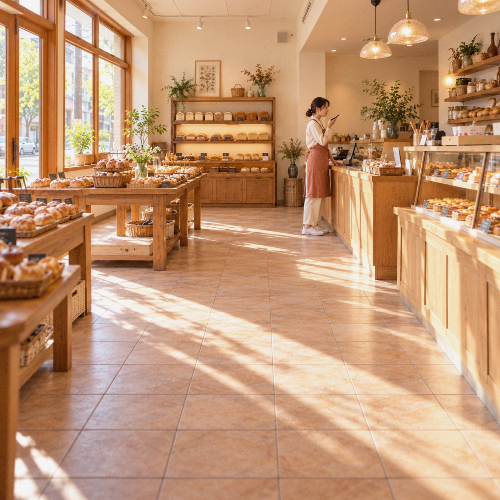

会社の価値を、
AIにも人にも伝わる情報に。
現場のスタッフが知っていること、顧客の声、研究や実績のデータ。会社の価値の多くは、まだ情報として整理されていません。simpleAは、その価値を記録し、AIにも人にも正しく伝わる形にして発信します。
事業を見るOur Approach
なぜ、価値を
情報にするのか
お客さまが何かを選ぶとき、人はまず検索し、いまはAIにも尋ねます。そのとき、会社の本当の価値が情報として残っていなければ、AIにも人にも正しく伝わりません。
価値は、現場の経験や顧客の声の中にあります。それを記録して整理し、AIと人の両方が読み取れる形にすることが、simpleAの仕事です。
Business
事業
simpleAは、2つの事業で、会社の価値を記録し、伝えることを支援しています。
BUSINESS 01
AI検索対策
ChatGPTやGeminiなどのAIが、貴社をどう紹介しているかを調べ、根拠のある対策で改善します。効果が確かめられた施策だけを提案し、制作の支援も行います。
詳しく見る
BUSINESS 02
音声AI日報 VoyLog
現場のスタッフが、スマートフォンに話しかけるだけで日報が完了。AIが文字起こしをして、週報などの報告書も自動で作成します。
準備中Company
会社概要
- 会社名
- 株式会社simpleA（simpleA Inc.）
- 代表取締役
- 冨士川 凛太郎（Rintaro Fujikawa） 博士（工学）
1980年熊本県生まれ。豊橋技術科学大学大学院 博士後期課程修了。日立製作所で、SCM・物流システムの開発とコンサルティングに従事。2016年から2025年まで、腸内細菌研究ベンチャーのAuB株式会社で取締役を務め、1,200人以上のアスリートの腸内細菌の調査と、商品・サービスの開発を主導した。現在は、AI検索の調査・研究にもとづくAI検索対策のコンサルティングと、音声日報サービスVoyLogの提供を行っている。一般社団法人腸内細菌検査協会 理事。
noteを読む - 事業内容
- AI検索対策のコンサルティング
音声日報サービス「VoyLog」の開発・提供
各種コンサルティング - 所在地
- 〒431-4102 静岡県浜松市天竜区水窪町地頭方1200-2
- お問い合わせ
- info@simplea.cc
お問い合わせ
AI検索対策やVoyLogについてのご相談は、フォームまたはメールでお問い合わせください。
info@simplea.cc